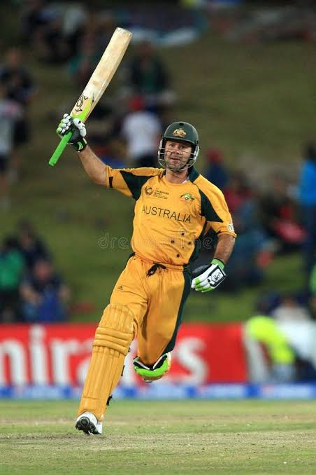
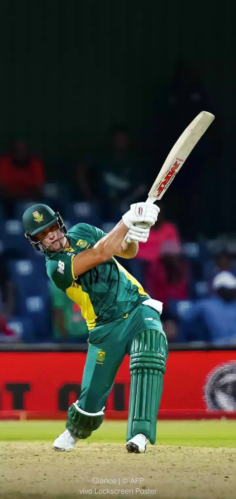

Welcome to the Cricket Fan Zone
Your home for the greatest game on Earth — news, rules, and the season ahead.
Explore the Season
Fan Favourites
Meet a few of the stars that make cricket unforgettable.
Player One
Player One
Top-order batsman known for fearless hitting and a strike rate to match.
Player Two
Player Two
Express-paced bowler who thrives in the death overs with pinpoint yorkers.

Player Three
Player Three
Agile wicketkeeper with lightning glove work and a calm head under pressure.

Player Four
Player Four
Versatile all-rounder who changes games with both bat and ball.
Cricket Rules & How-To
Get up to speed with the basics of the game.
Each team bats for a maximum of 20 overs, with each over containing six legal deliveries.
Eleven players per side cover batting, bowling, wicketkeeping, and fielding roles between them.
Runs come from pushing the ball and running between the wickets, or from boundaries hit to the edge.
Season Tracker
Filter the schedule to see what's coming up and how the team is doing.
Match 1 — vs Opponents A
Result: Won by 5 wickets
Match 2 — vs Opponents B
Upcoming — date TBC
Match 3 — vs Opponents C
Result: Lost by 12 runs
Match 4 — vs Opponents D
Upcoming — date TBC